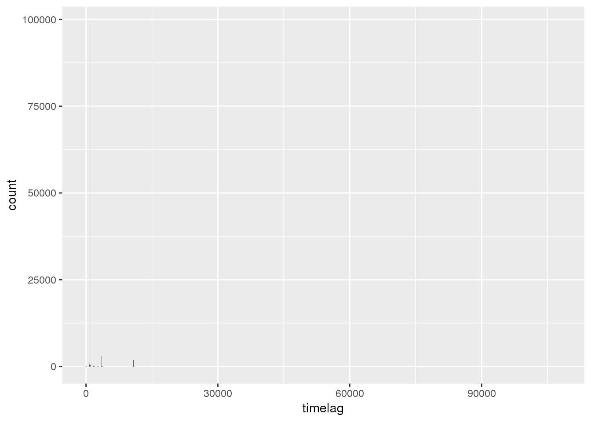
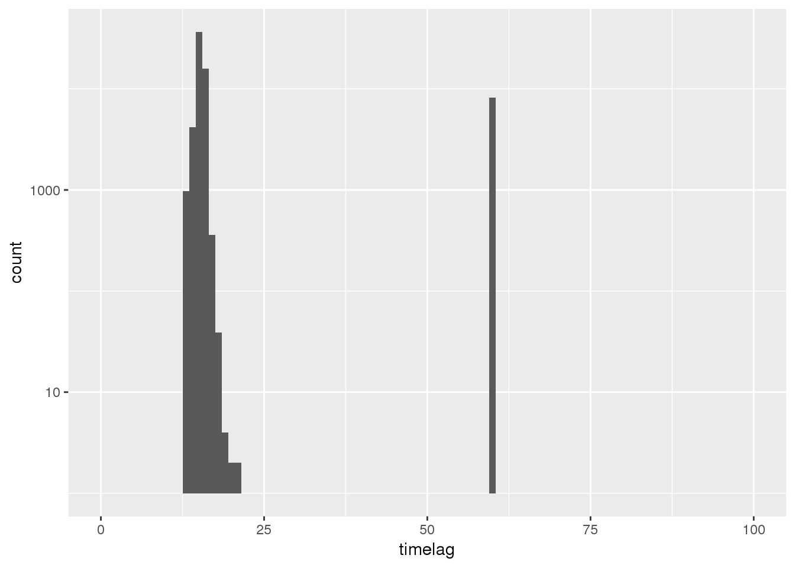
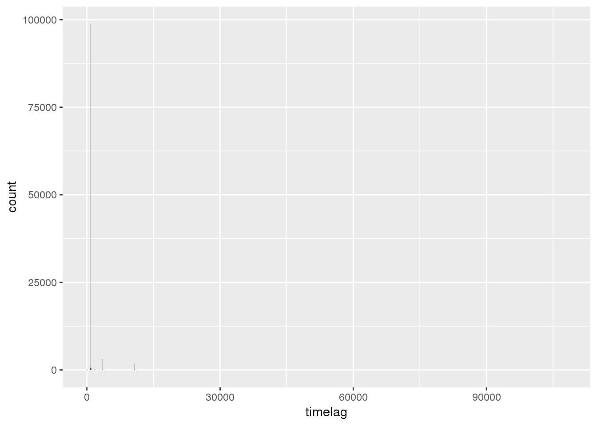
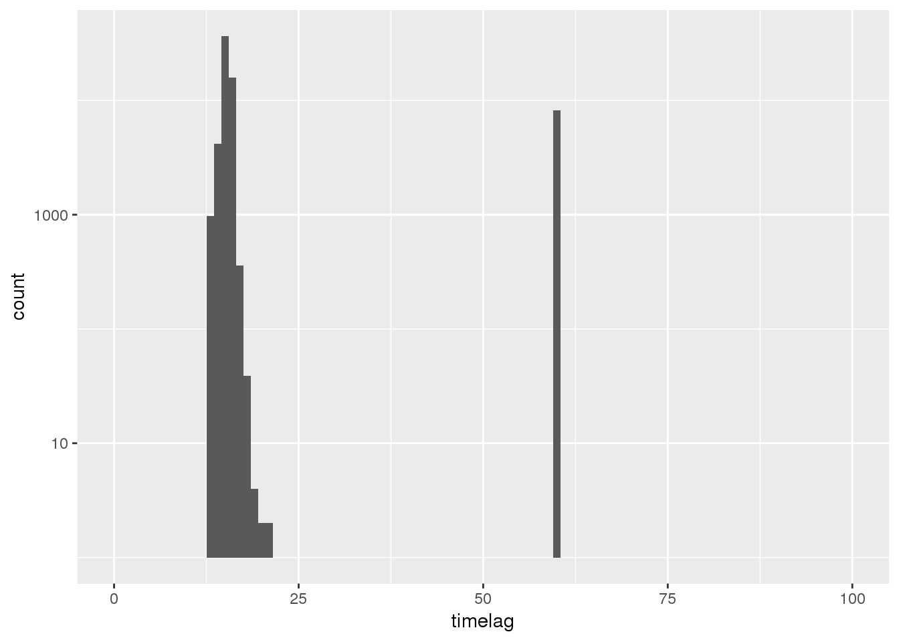
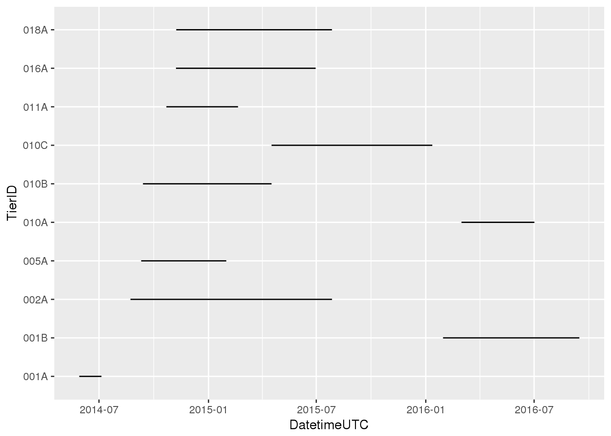
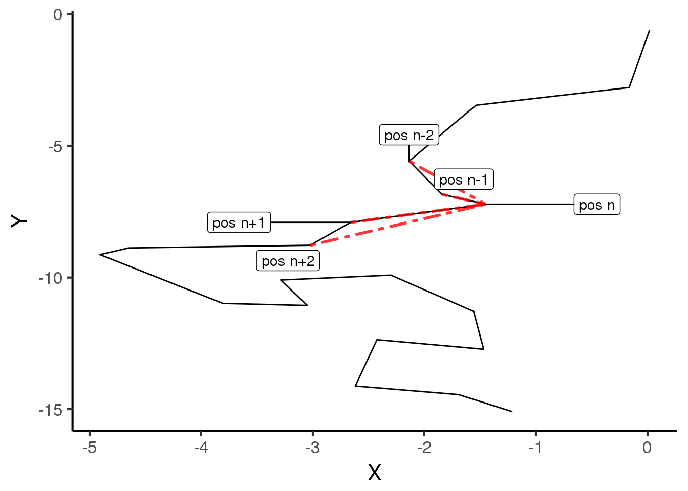
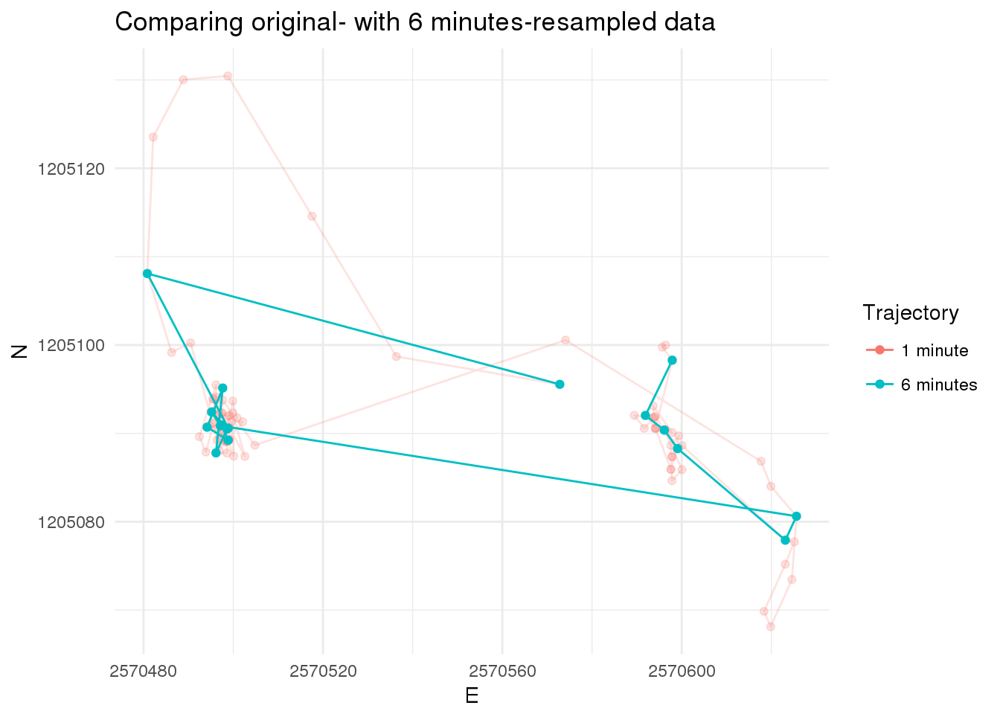
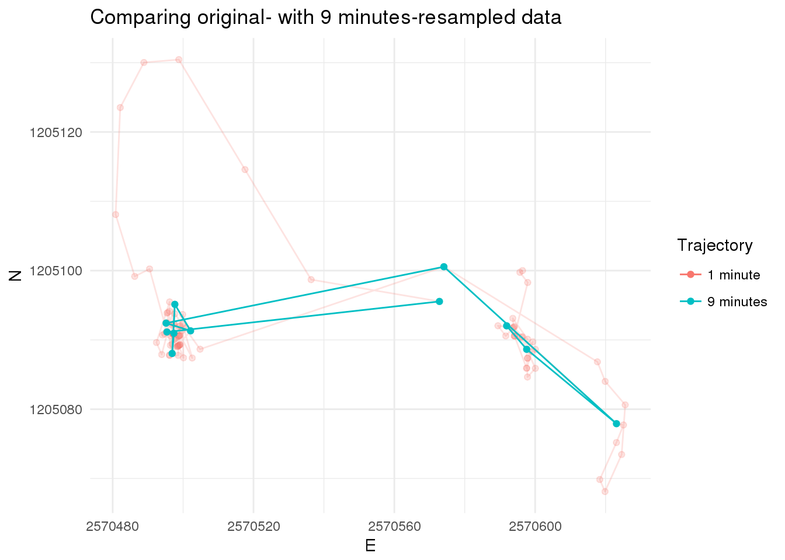
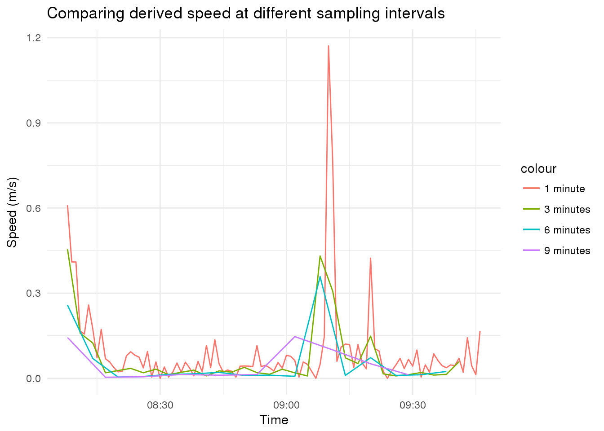

Exercise 2
Learning Outcomes
- You understand the SAC approach in the context of tidyverse tools and can apply it to
sfobjects - You can derive attributes from your data based on changes in the observed variables
- You can resample your data for multi scaled analyses
Prerequisites
Readings Skills from “R for Data Science” (Wickham and Grolemund 2017):
- RS2.1 Chap3 Data Transformation with
dplyr(31p, 43-76) - RS2.2 Chap10 Relational data with
dplyr(21p, 171-193) - RS2.3 Chap14 Pipes with
magrittr(6p, 261-268)
Readings Theory
- R2.1 Laube and Purves (2011): How fast is a cow? cross - scale analysis of movement data.
Preperation
Open your R Project from last week. Load all libraries and run the script to import and clean your data. Install the package zoo to get access to the rolling window functions for last (optional) exercise. Also, install the package CMAtools where we have put together some helper functions so simplify some tasks in this course. The package CMAtools is not on CRAN, and we need to install it similar to how we installed the newest version of ggplot last week. Since it is not on the official GIThub page either, but on the ZHAW owned GIThub server, the syntax for installation is slightly different (see code below).
Note:
- If you want to understand what the functions in CMAtools do, you can either check the package documentation (
help(package = "CMAtools")) or look at the functions GIThub site. - We will be extending this package regularly within this course. Reinstall the package with the code below to update your local version of the package.
install.packages("zoo")
devtools::install_git("https://github.engineering.zhaw.ch/PatternsTrendsEnvironmentalData/CMAtools.git")Demo Tidyverse
Depending on your knowledge of R, getting an overview of the data we imported last week might have been quite a challenge. Surprisingly enough, importing, cleaning and exploring your data can be the most challenging, time consuming part of a project. RStudio and the tidyverse offer many helpful tools to make this part easier (and more fun). You have read chapters on dplyr and magrittr as a preparation for this Exercise. Before we start with the Exercise however, this demo illustrates a simple approach offered by tidyverse which is applicable to sf-objects.
Assume we want to calculate the timelag in between subsequent positions. To achieve this we can use the function difftime() combined with lead() from dplyr. Let’s look at these functions one by one.
difftime
difftime takes two POSIXct values.
now <- Sys.time()
later <- now + 10000
time_difference <- difftime(later,now)You can also specify the unit of the output
time_difference <- difftime(later,now,units = "mins")difftime returns an object of the Class difftime. However in our case, numeric values would be more handy than the Class difftime. So we’ll wrap the command in as.numeric():
str(time_difference)
## Class 'difftime' atomic [1:1] 167
## ..- attr(*, "units")= chr "mins"time_difference <- as.numeric(difftime(later,now,units = "mins"))
str(time_difference)
## num 167lead() / lag()
lead() and lag() return a vector of the same length as the input, just offset by a specific number of values (default is 1). Consider the following sequence:
numbers <- 1:10
numbers
## [1] 1 2 3 4 5 6 7 8 9 10We can now run lead() and lag() on this sequence to illustrate the output. n = specifies the offset, default = specifies the default value used to “fill” the vector.
lead(numbers)
## [1] 2 3 4 5 6 7 8 9 10 NA
lead(numbers,n = 2)
## [1] 3 4 5 6 7 8 9 10 NA NA
lag(numbers)
## [1] NA 1 2 3 4 5 6 7 8 9
lag(numbers,n = 5)
## [1] NA NA NA NA NA 1 2 3 4 5
lag(numbers,n = 5, default = 0)
## [1] 0 0 0 0 0 1 2 3 4 5This helps us performing operations on subsequent values in a vector (or rows in a table)
mutate()
Using the above functions (difftime() and lead()), we can calculate the time difference between subsequent positions:
wildschwein_BE$timelag <- as.numeric(difftime(lead(wildschwein_BE$DatetimeUTC),wildschwein_BE$DatetimeUTC,units = "secs"))We mention wildschwein_BE three times in this function, which is why we can use mutate():
wildschwein_BE <- mutate(wildschwein_BE,timelag = as.numeric(difftime(lead(DatetimeUTC),DatetimeUTC,units = "secs")))Now let’s have a look at this vector:
summary(wildschwein_BE$timelag)
## Min. 1st Qu. Median Mean 3rd Qu. Max. NA's
## -65155503 895 900 259 907 49579199 1These values don’t make much sense: some are negative (which should not be the case) and some are very high (which would indicate large data gaps and should not be the case either). The reason for this result is that we did not consider that timelag should just be calculated between subsequent rows of the same individual. We can implement this by using group_by() (just as if calculating the convex hull last week).
wildschwein_BE <- group_by(wildschwein_BE,TierID)After adding this grouping variable, calculating the timelag automatically accounts for the individual trajectories.
wildschwein_BE <- mutate(wildschwein_BE,timelag = as.numeric(difftime(lead(DatetimeUTC),DatetimeUTC,units = "secs")))
summary(wildschwein_BE$timelag)
## Min. 1st Qu. Median Mean 3rd Qu. Max. NA's
## 12 895 900 1203 907 108023 10Summary returned the metrics over all individuals. If we want to summarise our data and get metrics per animal, we can use the dplyr function summarise(). In contrast to mutate(), which just adds a new column to the dataset, summarise() “collapses” the data to one row per individual (specified by group_by).
summarise(wildschwein_BE, mean = mean(timelag, na.rm = T))The above operation works fine on normal data.frames, but since wildschwein_BE is also an sf object, summarise actually merges all the points to a multipoint geometry, which takes a long time to calculate. In order to prevent this, we can wrap the sf object in as.data.frame which removes the spatial attribute. Regrettably, it also removes the group_by variable, which we need to set again. The command therefore goes like:
summarise(group_by(as.data.frame(wildschwein_BE),TierID), mean_timelag = mean(timelag, na.rm = T))
## # A tibble: 10 x 2
## TierID mean_timelag
## <chr> <dbl>
## 1 001A 1661.
## 2 001B 900.
## 3 002A 1286.
## 4 005A 1825.
## 5 010A 980.
## 6 010B 1607.
## 7 010C 694.
## 8 011A 2736.
## 9 016A 1412.
## 10 018A 1599.This code is hard to read, since it has so many nested functions which need to be read from the inside out. In order to make code readable in a more human-friendly way, we can use the piping command %>% from magrittr, which is included in dplyr and the tidyverse. The above code then looks like this:
wildschwein_BE %>% # Take wildschwein_BE...
as.data.frame() %>% # ...convert it to a data.frame...
group_by(TierID) %>% # ...group it by TierID
summarise( # Summarise the data...
mean_timelag = mean(timelag,na.rm = T) # ...by calculating the mean timelag
)
## # A tibble: 10 x 2
## TierID mean_timelag
## <chr> <dbl>
## 1 001A 1661.
## 2 001B 900.
## 3 002A 1286.
## 4 005A 1825.
## 5 010A 980.
## 6 010B 1607.
## 7 010C 694.
## 8 011A 2736.
## 9 016A 1412.
## 10 018A 1599.Tasks and Inputs
Task 1: Getting an Overview
First, inspect your data in more detail. Try to answer the following questions:
- How many individuals were tracked?
- How long were the individual tracked? Are there gaps?
- Were all individuals tracked concurrently or sequentially?
- What is the temporal sampling interval between the locations?
Here are some exemplary visualisation you could produce to answer these questions. Can you now answer the above questions?  

Input: cut() vector by intervals
For the next Task, we will need a function to split a continuous variable into specific intervals. For this, the function cut()is very handy. Let’s introduce this function with a quick example. Assume we have a series of number that represent the ages of ten different people.
ages <- c(20,25,18,13,53,50,23,43,68,40)Let’s say we want to split this into equal intervals of 10 years.
breaks <- seq(0,50,10)
cut(ages,breaks = breaks)
## [1] (10,20] (20,30] (10,20] (10,20] <NA> (40,50] (20,30] (40,50]
## [9] <NA> (30,40]
## Levels: (0,10] (10,20] (20,30] (30,40] (40,50]Note:
- If a number does not fit within an interval defined by
breaks =,cut()will returnNA(as for example for the fifth element53). - The default
labelswith(and]might seem a little ugly and puzzling at first, but in fact they are a standard form of notating intervals in mathematics. - If you don’t like
(and], you can: - specify your own labels with the argument
labels =or - use the the function
labels_nicewe provide with theCMAtools-package - Four thresholds (i.e.
breaks) return three intervals (i.e.lables), as shown below.
breaks <- c(0,30,60,100)
cut(ages, breaks = breaks, labels = c("young","middle aged","old"))
## [1] young young young young middle aged
## [6] middle aged young middle aged old middle aged
## Levels: young middle aged old
cut(ages, breaks = breaks, labels = CMAtools::labels_nice(breaks))
## [1] 0-30 0-30 0-30 0-30 30-60 30-60 0-30 30-60 60-100 30-60
## Levels: 0-30 30-60 60-100Task 2: Making groups by sampling Interval
Now that we’ve established that we have different sampling intervals (Task 1), we have to segment our trajectories in such a way, that we can perform further analysis during specific sampling intervals only. If we measure speed, or turning angles, we have to be very clear on what temporal (an thus spatial) scale or granularity we are performing this analysis.
We therefore have to define thresholds to group segments with a similar sampling interval. Explore the dataset in more detail (e.g. using histograms at different scales), and choose reasonable threshold values to group the trajectories into different sampling intervals.
Note:
- It might make more sense to choose narrow intervals at shorter time lags and wider intervals at longer time lags.
- Store the interval names in a new column named
samplingInt - explore the dataset by using a logarithmic
y-axis(scale_y_log10()) and looking at the different parts of thex-axisseperately - We will later filter the data by the sampling interval. We therefore recommend the use of
labels_nice()from the packageCMAtoolsfor nicer, more intuitive labels.


Input: Geometry as columns
Last week, we transformed our data from a data.frame to an sf object. This turned our Lat/Long Columns into a single geometry (list) column. While this is very handy for many spatial operations, accessing the coordinates directly becomes difficult. We therefore suggest storing the information twice, once as a geometry and once as a numeric value. We did this for the values in WGS84, but not yet for CH1903+ LV95.
wildschwein_BE
## Simple feature collection with 141763 features and 8 fields
## geometry type: POINT
## dimension: XY
## bbox: xmin: 2568153 ymin: 1201483 xmax: 2577023 ymax: 1207609
## epsg (SRID): 2056
## proj4string: +proj=somerc +lat_0=46.95240555555556 +lon_0=7.439583333333333 +k_0=1 +x_0=2600000 +y_0=1200000 +ellps=bessel +towgs84=674.374,15.056,405.346,0,0,0,0 +units=m +no_defs
## # A tibble: 141,763 x 9
## # Groups: TierID [10]
## TierID TierName CollarID DatetimeUTC Lat Long timelag
## <chr> <chr> <int> <dttm> <dbl> <dbl> <dbl>
## 1 001A Ueli 12272 2014-05-28 21:01:14 47.0 7.05 844.
## 2 001A Ueli 12272 2014-05-28 21:15:18 47.0 7.05 895.
## 3 001A Ueli 12272 2014-05-28 21:30:13 47.0 7.05 898.
## 4 001A Ueli 12272 2014-05-28 21:45:11 47.0 7.05 922.
## 5 001A Ueli 12272 2014-05-28 22:00:33 47.0 7.05 883.
## 6 001A Ueli 12272 2014-05-28 22:15:16 47.0 7.05 898.
## 7 001A Ueli 12272 2014-05-28 22:30:14 47.0 7.05 895.
## 8 001A Ueli 12272 2014-05-28 22:45:09 47.0 7.05 903.
## 9 001A Ueli 12272 2014-05-28 23:00:12 47.0 7.05 896.
## 10 001A Ueli 12272 2014-05-28 23:15:08 47.0 7.05 908.
## # ... with 141,753 more rows, and 2 more variables: samplingInt <fct>,
## # geometry <POINT [m]>Let’s do the same for the CH1903+ LV95-values, as we will need the values in columns for our next task. First, we have to extract the Coordinates using st_coordinates(). We can store these values in a new variable and display them:
# Store coordinates in a new variable
coordinates <- st_coordinates(wildschwein_BE)
head(coordinates)
## X Y
## 1 2570390 1204820
## 2 2570389 1204826
## 3 2570391 1204821
## 4 2570388 1204826
## 5 2570388 1204819
## 6 2570384 1204828Note that that the column are named X and Y, while CH1903+ LV95 names the Axes E and N: let’s rename the columns appropriately. After this, we can use cbind() to “glue” the columns to our original sf-object.
colnames(coordinates) <- c("E","N")
wildschwein_BE <- cbind(wildschwein_BE,coordinates)Task 3: Deriving movement parameters I: Euclidean Distance and Speed
In this task we will derive some additional movement parameters from our trajectories. Note, so far our trajectories only consist of a list of time-stamped spatial locations. So let’s calculate the animal’s speed based on the distance and timelag in between two subsequent locations.
- If you’re working with
dplyr, you can addsamplingInttogroup_by()(in addition toTierID) and so make sure you’re not calculating speed across different sampling intervals. - You can use the function
euclid()from theCMAtoolspackage to calculate Euclidean distances between subsequent rows. Use?euclidto see what the function expects and returns. - use
lead(E,1)to address the the rown+1 - make sure you’re clear in what unit you are measuring speed. Meters per second is a SI base unit, but might be unhandy for the speeds travelled by wild boar. Perhaps make two speed columns, one in meters per second and one in km per hour?
Task 4
Laube and Purves (2011) analyse animal movement across different scales (see below).

Laube and Purves (2011): Black points are used in calculation of movement parameters (e.g. speed) at a given termporal scale.
We will do the same for our data and will be working on a subset of our dataset. We will only need trajectories with a sampling interval of around 60 seconds (\[\pm\]20 seconds). Filter your data accordingly and save it to a new variable (we will use wildschwein_BE_1). From this subset, take the first 100 positions for the following task.
Filter
If you like to stick to the tidyverse approach, you can use slice() to subset the dataset by row number. Slice takes an integer vector. Eg: slice(dataset, 1:10), returns the first 10 rows of a dataset, slice(dataset, c(1,5,10)) returns the 1st, 5th and 10th value of a dataset.
Resample
Now manually reduce the granularity of our sampling interval by selecting samples every 3rd, 6th and 9th minute.
- You can use
slice()again for this task by providing an integer vector (withseq()) in the desired frequency - Save each resampled dataset in a new variable. We will use (
wildschwein_BE_3,wildschwein_BE_6andwildschwein_BE_9)
Update derived parameters
timelag, steplength and speed now have to be recalculated on the basis of the resampled data. Do so as we illustrated in the Chapter Demo.
Visualize
Compare the speeds in a line plot and viualize the trajectories in a map (see examples below). Interpret the line plot, what do the different lines for the different temporal granularities tell you?
We’ve stored our location data in three different form in our dataset. Once as a geometry, once as E/N and once as lat/long. In our view, it is most practical to use the E/N (integer) columns of our data to map them in this task
geom_sf()does not plot lines, just points- Therefore, use
geom_path()andgeom_point()rather thangeom_sf()withinggplot - In contrast to
geom_sf(), you have to explicitly specify thex/ycolumns (in our caseE/N) withgeom_path()/geom_point() geom_line()does not work when mapping trajectory data, since it connects the observations in order of the variable on the x axis.geom_path()connects the observations in the order in which they appear in the data

Task 5 (Optional): Deriving movement parameters II: Rolling window functions
A different approach would be to smoothen the derived parameters using a moving window function. The zoo package offers a variate of moving window functions (roll*). Use roll_mean() to smooth the calculated speed. Familiarise yourself with this function by working on some dummy data, for example:
{kind=link}
library(zoo)
example <- rnorm(10)
rollmean(example,k = 3,fill = NA,align = "left")
## [1] 0.11945985 0.75836040 0.25909870 0.16355833 -0.34173997
## [6] 0.15561816 0.01068451 0.39684910 NA NA
rollmean(example,k = 4,fill = NA,align = "left")
## [1] 0.56372256 0.27006486 0.14157053 0.21782269 -0.18199181
## [6] -0.04474011 0.39279077 NA NA NANow run rollmeanon the speed variable of your original data (wildschwein_BE). Visualize the output from your moving windows and compare different window sizes (k =). It will probabbly make sense to just visualize a subset of your data.
Solutions (RCode)
## install.packages("zoo")
##
## devtools::install_git("https://github.engineering.zhaw.ch/PatternsTrendsEnvironmentalData/CMAtools.git")
wildschwein_BE <- ungroup(wildschwein_BE)
## Demo Tidyverse ################
now <- Sys.time()
later <- now + 10000
difftime(later,now)
time_difference <- difftime(later,now,units = "mins")
time_difference
str(time_difference)
time_difference <- as.numeric(difftime(later,now,units = "mins"))
str(time_difference)
numbers <- 1:10
numbers
lead(numbers)
lead(numbers,n = 2)
lag(numbers)
lag(numbers,n = 5)
lag(numbers,n = 5, default = 0)
lead(numbers)-numbers
wildschwein_BE$timelag <- as.numeric(difftime(lead(wildschwein_BE$DatetimeUTC),wildschwein_BE$DatetimeUTC,units = "secs"))
wildschwein_BE <- mutate(wildschwein_BE,timelag = as.numeric(difftime(lead(DatetimeUTC),DatetimeUTC,units = "secs")))
summary(wildschwein_BE$timelag)
wildschwein_BE <- group_by(wildschwein_BE,TierID)
wildschwein_BE <- mutate(wildschwein_BE,timelag = as.numeric(difftime(lead(DatetimeUTC),DatetimeUTC,units = "secs")))
summary(wildschwein_BE$timelag)
##
## summarise(wildschwein_BE, mean = mean(timelag, na.rm = T))
##
summarise(group_by(as.data.frame(wildschwein_BE),TierID), mean_timelag = mean(timelag, na.rm = T))
wildschwein_BE %>% # Take wildschwein_BE...
as.data.frame() %>% # ...convert it to a data.frame...
group_by(TierID) %>% # ...group it by TierID
summarise( # Summarise the data..
mean_timelag = mean(timelag,na.rm = T) # ... by calculating the mean timelag
)
## Task 1 ####################
ggplot(wildschwein_BE, aes(DatetimeUTC,TierID)) +
geom_line()
ggplot(wildschwein_BE, aes(timelag)) +
geom_histogram(binwidth = 50)
ggplot(wildschwein_BE, aes(timelag)) +
geom_histogram(binwidth = 1) +
lims(x = c(0,100)) +
scale_y_log10()
wildschwein_BE[1:50,] %>%
ggplot(aes(DatetimeUTC,timelag)) +
geom_line() +
geom_point()
## Input: cut vecotrs by intervals ####################
ages <- c(20,25,18,13,53,50,23,43,68,40)
breaks <- seq(0,50,10)
cut(ages,breaks = breaks)
cut(ages, breaks = c(0,30,60,100), labels = c("young","middle aged","old"))
## Task 2 ####################
breaks <- c(0,40,80,300,600,1200,2500,3000,4000,7500,110000)
ggplot(wildschwein_BE, aes(timelag)) +
geom_histogram(binwidth = 10) +
lims(x = c(0,600)) +
scale_y_log10() +
geom_vline(xintercept = breaks, col = "red")
ggplot(wildschwein_BE, aes(timelag)) +
geom_histogram(binwidth = 10) +
lims(x = c(600,1200)) +
scale_y_log10() +
geom_vline(xintercept = breaks, col = "red")
ggplot(wildschwein_BE, aes(timelag)) +
geom_histogram(binwidth = 10) +
lims(x = c(1200,10000)) +
scale_y_log10() +
geom_vline(xintercept = breaks, col = "red")
labels_nice <- function(breaks){
return(paste(lag(breaks,default = NULL),lead(breaks,default = NULL),sep="-"))
}
# todo: noch in CMA Tools integrieren
wildschwein_BE <- wildschwein_BE %>%
group_by(TierID) %>%
mutate(
samplingInt = cut(timelag,breaks = breaks,labels = labels_nice(breaks))
)
wildschwein_BE %>%
as.data.frame() %>%
group_by(samplingInt) %>%
summarise(
n = n()
) %>%
ggplot(aes(samplingInt,n)) +
geom_bar(stat = "identity") +
theme(axis.text.x = element_text(angle = 45, hjust = 1)) +
scale_y_log10()
wildschwein_BE
# Store coordinates in a new variable
coordinates <- st_coordinates(wildschwein_BE)
head(coordinates)
colnames(coordinates) <- c("E","N")
wildschwein_BE <- cbind(wildschwein_BE,coordinates)
## Task 3 ####################
library(CMAtools)
wildschwein_BE <- wildschwein_BE %>%
group_by(TierID,samplingInt) %>%
mutate(
steplength = euclid(lead(E, 1),lead(N, 1),E,N),
speed = steplength/timelag
)
sample <- data.frame(position = paste0("pos",1:6),samplingInt=c(rep(60,3),rep(120,3)))
sample
sample <- sample %>%
mutate(
samplingInt_control = samplingInt == lead(samplingInt,1),
samplingInt_group = number_groups(samplingInt_control,include_first_false = T)
)
sample
wildschwein_BE <- wildschwein_BE %>%
group_by(TierID) %>%
mutate(
samplingInt_T = samplingInt == lead(samplingInt),
group = number_groups(samplingInt_T,include_first_false = T)
) %>%
dplyr::select(-samplingInt_T)
wildschwein_BE_short <- wildschwein_BE %>%
filter(samplingInt == "40-80")
wildschwein_BE_short <- wildschwein_BE_short %>%
filter(group == 9) %>%
slice(1:100)
wildschwein_BE_3 <- wildschwein_BE_short %>%
slice(seq(1,nrow(.),3))
wildschwein_BE_6 <- wildschwein_BE_short %>%
slice(seq(1,nrow(.),6))
wildschwein_BE_9 <- wildschwein_BE_short %>%
slice(seq(1,nrow(.),9))
wildschwein_BE_3 <- wildschwein_BE_3 %>%
mutate(
timelag = as.numeric(difftime(lead(DatetimeUTC),DatetimeUTC,units = "secs")),
steplength = euclid(lead(E, 1),lead(N, 1),E,N),
speed = steplength/timelag
)
wildschwein_BE_6 <- wildschwein_BE_6 %>%
mutate(
timelag = as.numeric(difftime(lead(DatetimeUTC),DatetimeUTC,units = "secs")),
steplength = euclid(lead(E, 1),lead(N, 1),E,N),
speed = steplength/timelag
)
wildschwein_BE_9 <- wildschwein_BE_9 %>%
mutate(
timelag = as.numeric(difftime(lead(DatetimeUTC),DatetimeUTC,units = "secs")),
steplength = euclid(lead(E, 1),lead(N, 1),E,N),
speed = steplength/timelag
)
ggplot() +
geom_point(data = wildschwein_BE_9, aes(E,N), colour = "red") +
geom_path(data = wildschwein_BE_9, aes(E,N), colour = "red") +
geom_point(data = wildschwein_BE_6, aes(E,N), colour = "blue") +
geom_path(data = wildschwein_BE_6, aes(E,N), colour = "blue") +
geom_point(data = wildschwein_BE_3, aes(E,N), colour = "green") +
geom_path(data = wildschwein_BE_3, aes(E,N), colour = "green") +
geom_point(data = wildschwein_BE_short, aes(E,N), colour = "black") +
geom_path(data = wildschwein_BE_short, aes(E,N), colour = "black")
ggplot() +
geom_point(data = wildschwein_BE_9, aes(DatetimeUTC,speed), colour = "red") +
geom_path(data = wildschwein_BE_9, aes(DatetimeUTC,speed), colour = "red") +
geom_point(data = wildschwein_BE_6, aes(DatetimeUTC,speed), colour = "blue") +
geom_path(data = wildschwein_BE_6, aes(DatetimeUTC,speed), colour = "blue") +
geom_point(data = wildschwein_BE_3, aes(DatetimeUTC,speed), colour = "green") +
geom_path(data = wildschwein_BE_3, aes(DatetimeUTC,speed), colour = "green") +
geom_point(data = wildschwein_BE_short, aes(DatetimeUTC,speed), colour = "black") +
geom_path(data = wildschwein_BE_short, aes(DatetimeUTC,speed), colour = "black") +
labs(x = "Time",y = "Speed (m/s)")
## Task 4 ####################
library(zoo)
example <- rnorm(10)
rollmean(example,k = 3,fill = NA,align = "left")
rollmean(example,k = 4,fill = NA,align = "left")
wildschwein_BE <- wildschwein_BE %>%
group_by(TierID) %>%
mutate(
speed2 = rollmean(speed,3,NA,align = "left"),
speed3 = rollmean(speed,5,NA,align = "left"),
speed4 = rollmean(speed,10,NA,align = "left")
)
wildschwein_BE[1:30,] %>%
gather(key,val,c(speed,speed2,speed3,speed4)) %>%
ggplot(aes(DatetimeUTC,val,colour = key,group = key)) +
geom_point() +
geom_line()
## NA